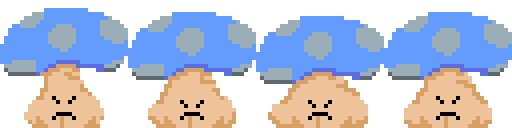

-
-progress 1-
There is currently 8 cards in the game, 3 enemies, 3 weapons and 1 boss
The main mechanics are finished at the moment unless I think of more, and if i do, I would rather not get too much scope creep
The enemies so far are a mushroom, a demon cat and a wolpertinger(a german fokelore creature)
And the boss is a pheonix that looks particularly like a flamingo
You're able to choose cards that send you to the next room and pick up different weapons throughout the game. There is alot finished at this point, that can be shown by the trailer above.
It shows 2 of the enemies and all 3 of the guns along with the boss.
More will be explained in future progress updates

-
-progress 2 -
I have added 2 more bosses, being a loch ness monster and fenrir. I also have fixed an issue where enemies would spawn in the walls. I also added an enemy that would shoot wall the walls and another enemy that would steal the weapon of the player.
The enemy spawning through walls glitch was fixed by putting areas around a room and then having them be put inside of a list that the enemy spawner has acces to. The spawner then gets a random number and takes the area that is equal to the number in the list.
Then I got the hight and width of that area, and subtracted the hight and width of the enemy on each of the sides of the area. Finally using a random number generator, I got a random point of the area and spawned the enemy there.
The way the weapon steal works is that the enemy checks all of the players child nodes and then if any of them are placed in the group of weapon, then it removes it as a child of the player and puts it as a child of itself.
For the weapon to hit the player, there are exported variables inside the scripts of the weapons called enemy, and if this is set to true the weapon or its projectiles will check for the player to damage and not the enemies.
-
-progress 3-
This part is mostly done for updating the hub, to make it more lively and to make it give the player things to progress with and not just making them do runs that have no purpose of getting far.
The first thing I did was working on saving some stats, which I could then use to check whether things should be in the hub or not, and so if you exit the game, you dont have to restart all progress.
The first thing that I did was create a gnome shop that just gives you a weapon and some stat boosts for the runs, and upon completeting the game, you get an outfit change.
After this I also this I also created a proper shop, where any coins you don't use in the runs then get saved and can be used to buy extra things. At the moment you can buy a dash, a specific gun, a extra start weapon slot and an outfit change to make you looknlike a knight.
And finally I made a statue that appears once you beat the game. Pressing shift next to this statue will make it turn red, and it will make the next run you play harder, and add 4 rooms you have to beat to beat the runs.
The game is getting much closer to being in a playable state.